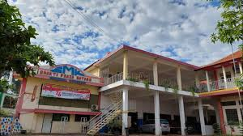

Project HTML Kolaborasi Bahasa Jawa dan IPAS
Sekolah SMK Bhakti Praja Batang inggih punika Lembaga Pendidikan Swasta ingkang wonten ing pangayoman Yayasan Bhakti Praja Korpri Kabupaten Batang. Sekolah menika fokus dhateng pambentukan karakter siswa ingkang gadhah Akhlaq mulia, Kompeten, saged Saing global, Andal, lan gadhah Ragam keunggulan (AKBAR).

| Nama | Kelas | Jurusan |
|---|---|---|
| Andi | X | RPL |
| Siti | X | RPL |
| Revan | XI | TKR |
| Weina | X | TSM |
| Brian | XI | TMI |
Klik link berikut untuk melihat materi IPAS:
Lihat materi IPAS